Index
Куратор раздела

Шустиков Владимир, оставивший военную жизнь позади и ушедший в данные с головой. Работаю с данными более 2х лет и останавливаться не собираюсь! Веду:
Если хочешь сменить текущую профессию на Дата Инженера — пиши не стесняйся, я сам проходил этот не легкий путь и тебе помогу https://t.me/ShustDE
Хочешь улучшить текущий раздел, внести недостающее или поправить формулировку? Предлагай PR и тегай @ShustGF.
Что такое GIT?
GIT - это фреймворк или просто система контроля версий. Ты мне не поверишь, но она нужна исключительно для того, чтобы контролировать, как изменяется твой проект(каталог с текстовыми файликами). Чтобы в случае проблем ты мог быстро откатитсья на шаг или несколько назад, не более того.
Принципы работы
Существует 3 принципа работы систем контроля версий:
- Локальное управление версиями;
- Децентрализованное управления версиями;
- Централизованное управление версиями.
Локальное управление версиями
Локальное управление версиями, по сути из себя представляет твое собственное локальное окружение (работает у тебя на локальном компе).
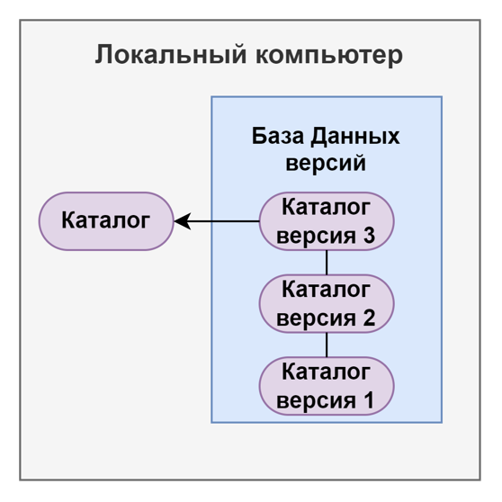
Децентрализованное управления версиями
Принцип всем известного GITHUB(о нём мы поговорим дальше). Смысл в том, что Вася работает в команде с Петей и им ну очень хочется общие наработки держать в одном месте и контралировать как ведется проект. Поэтому у них у каждого есть локальное управление версиями, а потом они скидывают свои наработки на общий сервер.
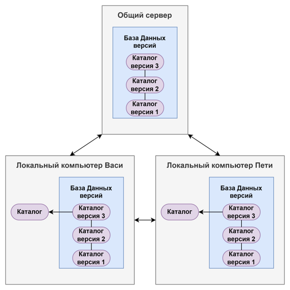
Централизованное управления версиями
Тут не буду особо разглогольствовать, посмотри на картинку выше и представь, что Вася и Петя ходят на пряму в общий сервер и меняют там на прямую файлы, без скачивания их на локальный компьютер.
Что такое GITHUB?
Как уже говорилось GITHUB - это децентрализованная система управления версиями. В ней создается свой репозиторий (это считай каталог), в который ты и твои коллеги могут оправлять изменения.
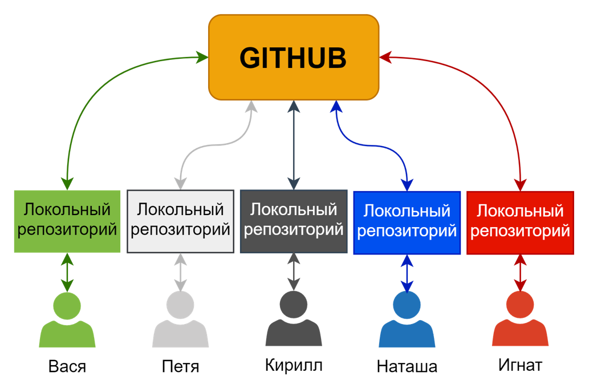
Создаем собственный репозиторий.
Создать репозиторий очень просто:
- Зайди во вкладку Repositories
- Нажми зелёную кнопку New
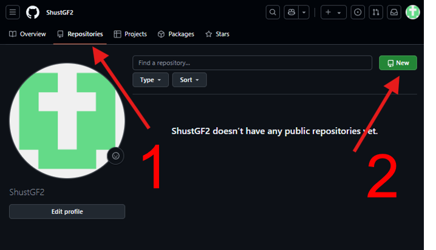
- Впиши уникальное имя твоего проекта
- Выбери публичный или приватный репозиторий
- Я люблю создавать репозиторий с созданым файлом READMY, а ты делай как хочешь
- Нажми большую, зелёную кнопку Create repository
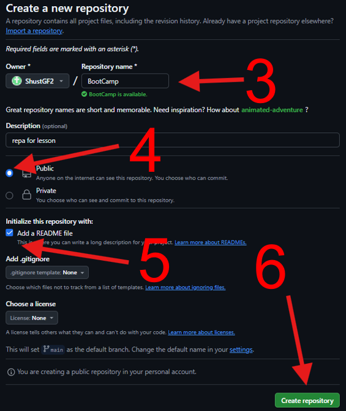
Не так уж тяжело, ну если вдруг тяжело, то может ну это IT ты задумайтся!
Прокидываем SSH-ключ.
Чтобы скачать и загрузить изменнения в свой репозиторий в первую очередь необходимо добавить, так называемый SSH-ключ. Грубо говоря с помощью него твое пространство в GITHUB будет понимать, что твоему компьютеру можно доверять и применять изменения, в противном случае access denied, ёпт...
Ну что го прокидывать, тут тоже ниче сложного, смотри:
- Заходишь в свой терминал или git bash
- Прописиваешь команду
ssh-keygen
- тебе предложать изменить каталог где будет хранится ключ и ввести кодовую фразу для генерацию ключа, забей болтяру и жми как все специ 3 раз Enter
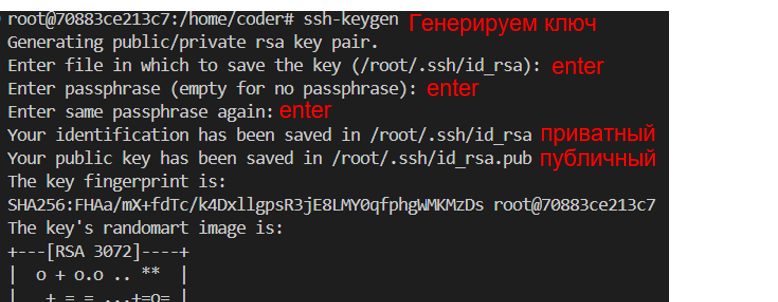
- Тебе нужно зайти в файл с публичным(не перепутай с приватным и вообще никому не показывай приватный ключ, НИ-КОГ-ДА!) ключом и скопировать его.
- Возвращайся в GITHUB
- Тыкай на своего перосонажа и переходи в настройки
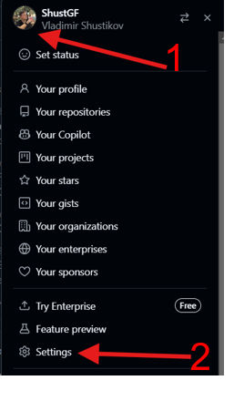
- С правой стороны перейди во вкладку SSH and GPG keys и тыкни очередную большую, зелёную кнопку New SSH key
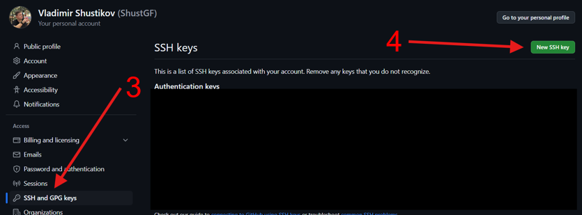
- Придумай название и вставь скопированый ключ и не промаж по БОЛЬШОЙ, ЗЕЛЕНОЙ КНОПКЕ.
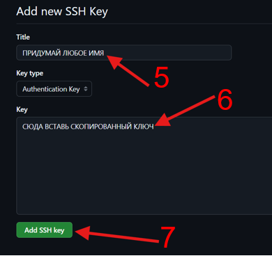
Всё ты молодец, самое сложное, то что делается навернео 1 раз в жизни, ну может 2, ты переосилил.
Джентельменский набор команд
Сейчас мы рассмотрим то, что необходимо знать каждому уважающему себя IT-шнику, который сталкивается с гитом.
git clone
git clone <адрес репозитория>
По сути это самая первая команда, которая клонирует перозиторий в твой каталог.
Адрес репозитория находится в ЗЕЛЕНОЙ кнопке Code во вкладке SSH
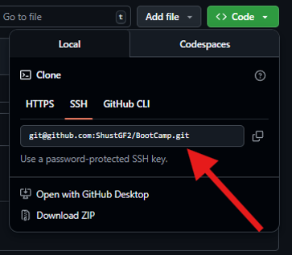
Как это работает: 1) Ты отправляешь запрос на клонирование 2) К тебе скачиваются в локальный репозиторий файлы 3) Ты начинаешь с ними работать
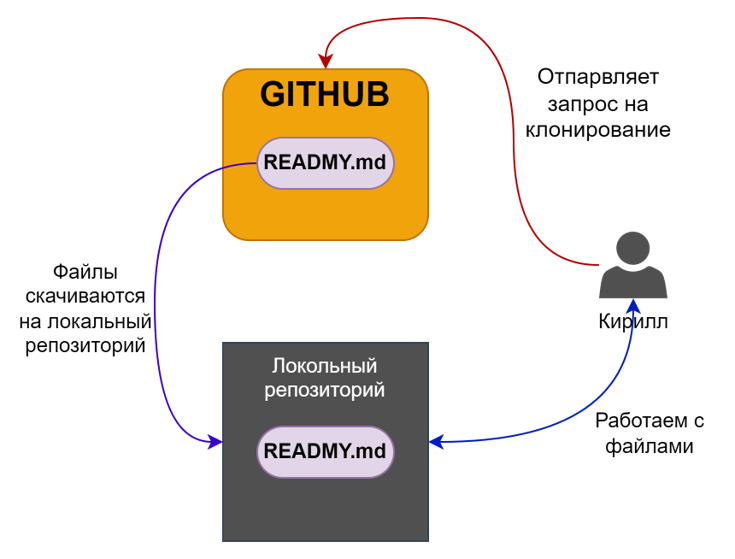
git add/restore
git add <файл/каталог>
Это прям пушка команда, перед тем как тебе отправить данные на изменения в общий репозиторий, тебе необходимо сказать гиту, какие именно файлы ты хочешь отправить в GITHUB.
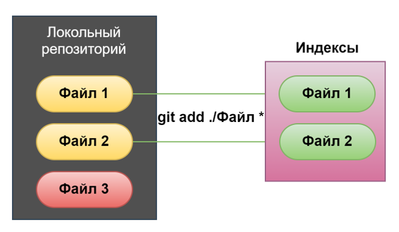
А теперь представь ты добавил не тот каколог или файл, что делать, ну конечно нужно удалить твое добавление, делается это так:
git restore <файл/каталог>
Ну в целом вот что произойдет с твоим файлом.
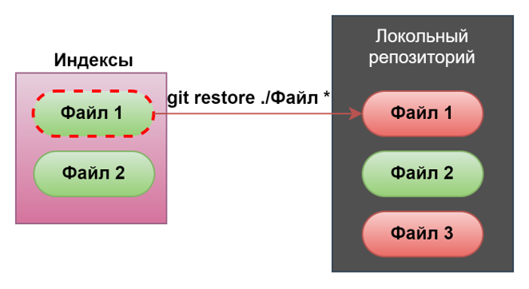
git commit
git commit –m “<комментарий к коммиту>”
Это самая важная команда и постоянно идет в ногу с командой добавления. Данная команда присваивает твоим изменениям индентификатор, по которому можно все твое добро отследить.
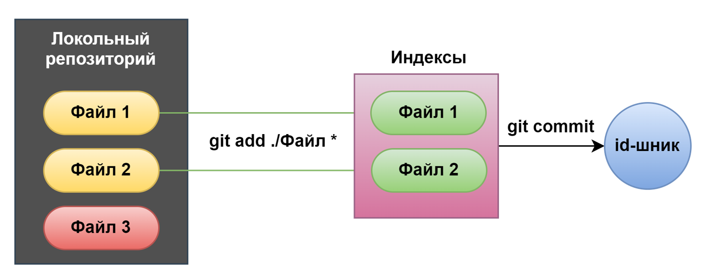
git push
git push origin <имя ветки>
Ну всё, это, по сути, конечная команда в твоей работе, которая отправляет твои изменения в репозиторий.
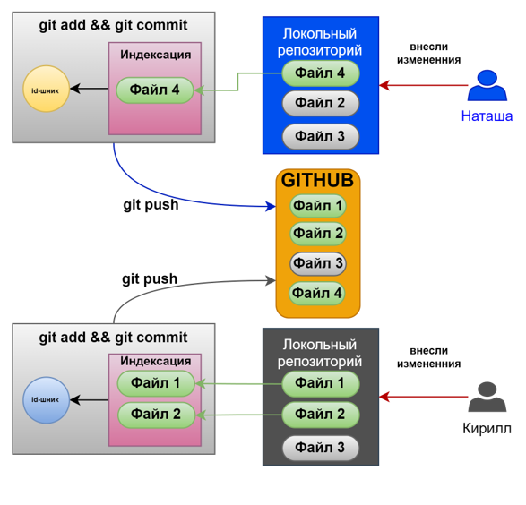
git pull
git pull origin <имя ветки>
Куча народу запушила свои измения в репозиторий, теперь необходимо, скачать все эти измения. Просто выполни команду выше.
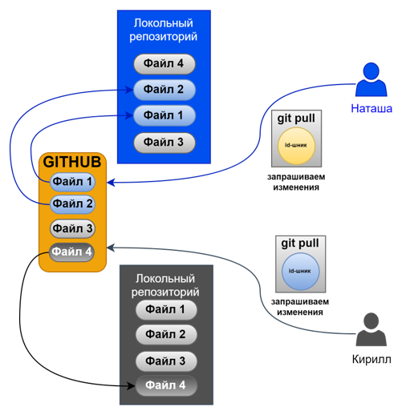
О чудо... Но это еще не всё, мы преходим к самой страшной теме ВЕТОККККК....
git branch/checkout
Слушай я честно скажу, что не знаю чего все боятся этих веток, но просто запомни следующие команды.
- выдает список веток
git branch
- создает новую ветку
git branch <имя ветки>
- переключение на ветку
git checkout <имя ветки>
- создает и переключаетcz на новую ветку
git checkout -b <имя ветки>
Тут в целом рассписывать очень долго поэому я порекомендую посмотреть моё видео(➜ Видео по работе с github / git на примере Bootcamp'а), где я объясняю принцип работы с ветками и возникающие коализии. Но если хочешь можешь попробовать разобраться сам, лови картинку:
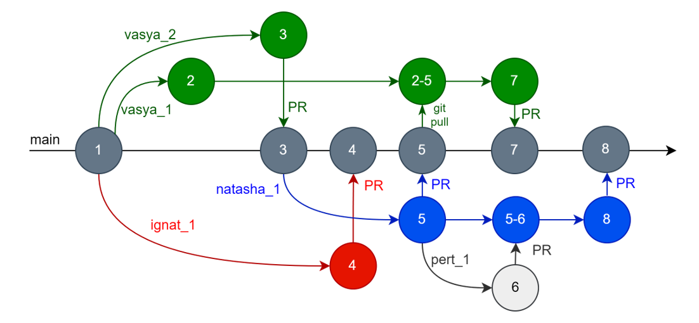